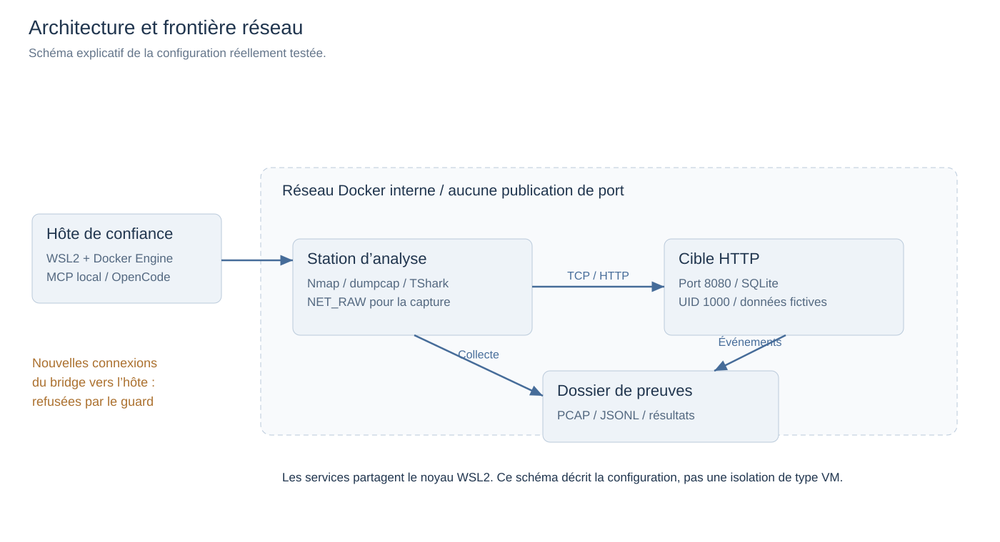
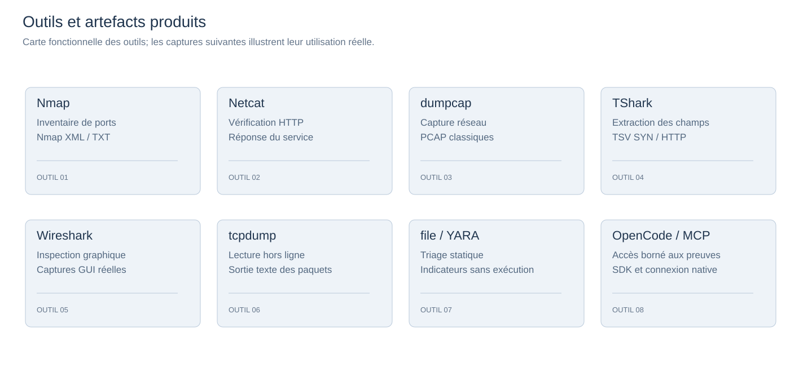
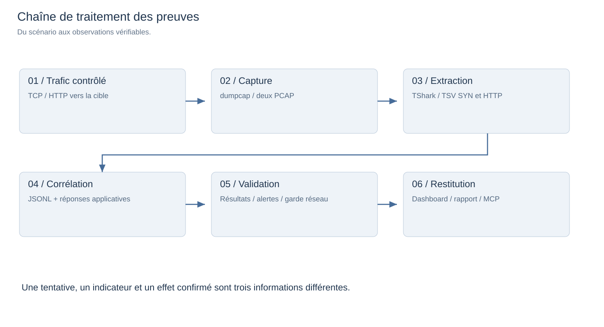
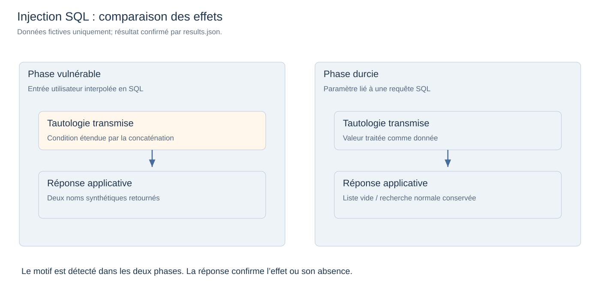
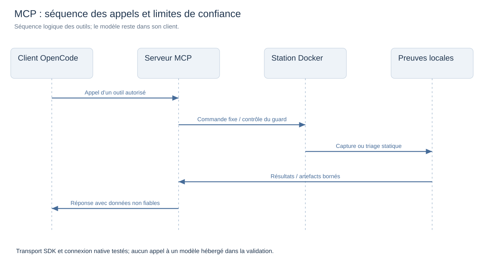
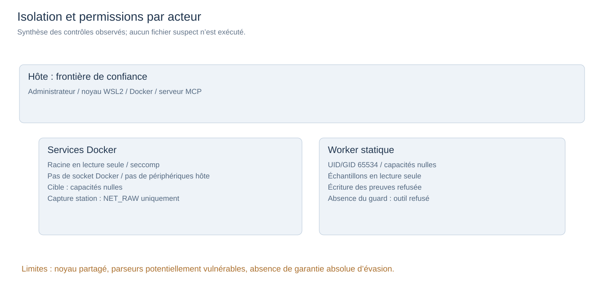

PrésentationCYBERTHREAT
CyberThreat
AI-assisted Detection · Détecter, analyser, expliquer.
Deux conteneurs, un réseau interne, des preuves réelles et une interface MCP OpenCode.
ARCHITECTURE
Architecture du laboratoire
Station → cible → preuves → analyste
512 Mo de RAM maximale pour les conteneurs. Aucun port publié. Systèmes de fichiers en lecture seule. Le noyau est partagé avec WSL2 : isolation distincte d’une VM.

RECONNAISSANCE
Reconnaissance TCP
101 ports testés · Nmap + Netcat
Port 8080 : service HTTP. Les autres ports du périmètre sont fermés. Un scan est un signal, pas une preuve de compromission.

CAPTURE
Collecte et corrélation
PCAP → TShark → trames et indicateurs
Deux PCAP complets, extraits SYN/HTTP, événements applicatifs et captures Wireshark. La station observe son propre trafic vers la cible.

SCÉNARIOS
Trois scénarios contrôlés
Scan · rafale de connexion · injection SQL
Données fictives uniquement. Les contrôles de référence vérifient le fonctionnement normal du service avant et après protection.
MITIGATION
Mesurer les protections
SQL paramétré + limitation à trois échecs
Avant : la tautologie expose deux noms. Après : aucun résultat. Les codes 401 deviennent 429 après trois échecs; cela bloque aussi temporairement une connexion correcte.

EXTENSION IA / MCP
Intégration MCP
OpenCode ↔ MCP ↔ Docker
Cinq outils bornés. Triage statique : SHA-256, type, entropie, chaînes, YARA. Aucune exécution du fichier. Les chaînes extraites ne sont jamais des instructions de confiance.

SÉCURITÉ
Des contrôles testés
Seccomp · capacités · montages · réseau
Accès à l’hôte refusé par filtrage du bridge. Connexion sortante refusée. Triage UID 65534, capacités effectives nulles. Une absence absolue d’évasion n’est pas garantie sur un noyau partagé.

VALIDATION
Résultats de validation
Résultats · PCAP · contrôles · intégrité
Tous les contrôles du scénario sont PASS. Le test MCP stdio et la connexion native OpenCode sont distincts. Les résultats sont associés aux artefacts de référence.
DÉMONSTRATION
Ouvrir les preuves réelles
run-20261011T231915Z
Utiliser les flèches pour naviguer. Ouvrir le dashboard pour comparer les phases et expliquer les limites de la détection.
Ouvrir le tableau de preuves ↗